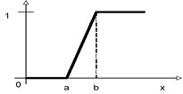
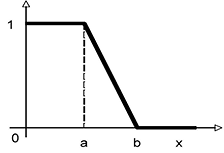
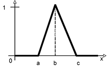
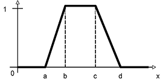

Ontology
An ontology consists of
A query expression is a conjunctive query, or a top-k ranking query allowing to retrieve the top-k ranked tuples only.
| (IMPLIES L R) | --> | n-ary relation L is a sub-relation of n-ary relation R |
| (IMPLIES (and L1 ... Lm) R) | --> | The intersection of the n-ary relations L1, ..., Lm, is a sub-relation of the n-ary relation R, with n>=1, m>=2 |
Note that
The syntax of right/left-hand relations is defined as follows:
| R | --> | A | (atomic concept) |
| (SOME [c1 ... ck] R) | (projection on the colums c1,..., ck of the n-ary relation R, 1<=k<=n) |
For instance, assume that we have an abstraction mapping
This declares that JobID is an atomic concept (unary relation) that is the projection on the jobID column of the JobTable table.
On the other hand, given an abstraction mapping
declaring that Job is the projection on the jobID, location, duration and salary columns of the JobTable table, then
(SOME [1 3] Job)
is the projection on the 1st and 3rd column of the Job relation and, thus, is a set of tuples (jobID, duration). Please note that the order of the indexes matters. Indeed,
(SOME [3 1] Job)
is a set of tuples (duration, jobID) instead.
Left-Hand Relation| R | --> | A | (atomic concept) |
| (SOME [c1 ... ck] R) | (projection on the colums c1,..., ck of the n-ary relation R, 1<=k<=n) | ||
| (SOME [c1 ... ck] R WHERE Cond1 ... Condl) | (projection on the colums c1,..., ck of the n-ary relation R, 1<=k<=n, where the tuples satisfy the conditions Cond1 ... Condl) |
Note that a left-hand relation is as a right-hand relation, except that now additionally we may specify conditions that a tuple has to satisfy. The conditions are:
| Cond | --> | (c <= v) | (the value of colum c is <= v) |
| (c >= v) | (the value of colum c is >= v) | ||
| (c < v) | (the value of colum c is < v) | ||
| (c > v) | (the value of colum c is > v) | ||
| (c = v) | (the value of colum c is = v) | ||
| (c != v) | (the value of colum c is != v) |
For instance,
(SOME [1] Job WHERE (2=New_York) (3>=5))
is the set of jobs (i.e., job IDs), located in New York, whose duration is at least 5 years.
Hence,
(IMPLIES (SOME [1] Job WHERE (2=New_York) (3>=5)) GoodJob)
is a inclusion statement stating that a job located in New York, whose duration is at least 5 years, is a good job. Here GoodJob, is an atomic concept.
| (MAP-ATOM A T cname[type]) | --> | Defines atomic concept A as the projection on colum cname of the n-ary database table T |
| (MAP-ROLE R T(cn1[t1] cnk[tk])) | --> | Defines the k-ary relation R as the projection on columnames cn1, ..., cnk of the n-ary database table T. 1<=k<=n |
| (MAP-ABSTRACT R n) | --> | Declares relation R as an n-ary abstract relation, n>=1. |
Notes:
Examples of abstraction statements are:
(MAP-ATOM JobID JobTable(jobID[INT]))
(MAP-ROLE Job JobTable(jobID[INT], location[STRING], duration[INT] salary[FLOAT]))
(MAP-ABSTRACT GoodJob 1))
(MAP-ROLE jobLocation JobTable(jobID[INT], location[STRING]))
(MAP-ROLE jobDuration JobTable(jobID[INT], duration[INT]))
(MAP-ROLE jobSalary JobTable(jobID[INT], salary[FLOAT]))
These statements allow to define arithmethic expressions macros to be used for ranking the tuples satisfying a query. The expressions depend on the syntax allowed by the underlying database ranking system. So far, we support RankSQL, whose arithmetic expressions are those compliant with postgres 7.4.3 and allowed to occur in the ORDER BY SQL statement. Macro definitions are of the form
(MAP-MACRO macroname definition)
where macroname is the name of the macro, and definition is a string describing the definition. The arguments x1, ..., xn of the defined function f(x1, ..., xn) are indicated with $1, ..., $n. Examples of macro defnitions are the following.
(DEF-MACRO max "CASE WHEN $1 > $2 THEN $1 ELSE $2 END")
This defines the maximum among two values
(DEF-MACRO min "CASE WHEN $1 <= $2 THEN $1 ELSE $2 END")
This defines the minimum among two values
(DEF-MACRO ls "CASE WHEN $3 <= $1 THEN 1 WHEN $3 >= $2 THEN 0 ELSE ($2 - $3)/($2 - $1) END")
This defines the so-called left-shoulder function ls(a,b,x)
(DEF-MACRO rs "CASE WHEN $3 <= $1 THEN 0 WHEN $3 >= $2 THEN 1 ELSE ($3 - $1)/($2 - $1) END")
This defines the so-called right-shoulder function rs(a,b,x)
(DEF-MACRO tri "CASE WHEN $4 <= $1 THEN 0 WHEN $4 >= $3 THEN 0 WHEN $4 <= $2 THEN ($4 - $1)/($2 - $1) ELSE ($3 - $4)/($3 - $2) END")
This defines the so-called triangolar function tri(a,b,c,x)
(DEF-MACRO trz "CASE WHEN $5 <= $1 THEN 0 WHEN $5 >= $4 THEN 0 WHEN $5 <= $2 THEN ($5 - $1)/($2 - $1) WHEN $5 <= $3 THEN 1 ELSE ($4 - $5)/($4 - $3) END")
This defines the so-called trapezoidal function trz(a,b,c,d,x)
 |
 |
 |
 |
|
Right-shoulder function
|
Left-shoulder function
|
Triangular function
|
Trapezoidal function
|
A query expression is a conjunctive query in which atomic concepts and n-ary relations may occur. If the underlying database systems supports also ranked queries, the a conjunctive query may allow also to specify a scoring function to rank the tuples. DL-DB allows also to submit a set of queries (union of conjunctive queries). In this latter case the value k of LIMIT has to be the same for all queries in the set.
| (RETRIEVE variableList WHERE RelationList) | Retrieve tuples instantiating the list of variables variableList that satisfy the list of relations RelationList |
| (RETRIEVE variableList WHERE RelationList ORDERBY ( function ) LIMIT (k)) | Retrieve top-k ranked tuples instantiating the list of variables variableList that satisfy the list of relations RelationList. The scoring function function is used to rank the tuples. Defined functions are referenced using & as prefix |
| (RETRIEVE variableList1 WHERE RelationList GROUPBY variableList2 ORDERBY ( aggregate(function) ) LIMIT (k)) |
Retrieve top-k ranked tuple groups instantiating the list of variables variableList1 that satisfy the list of relations RelationList. The tuples are grouped according to the variable list variableList2. The scoring function function is used to give a score to the tuples. Defined functions are referenced using & as prefix. The aggregation function aggregate is used to aggregate the score of the tuples belogning to the same group. aggregate has to be either MAX, MIN, SUM, AVG or COUNT. In case of COUNT, we count the number of records, so function has to be a variable. variableList1 has to be a subset of variableList2.
|
Notes:
| variableList | --> | (Var1 ... VarN) | A list of variables, N>=1 |
| Var | --> | ?alphanumeric string | A variable |
| RelationList | --> | (Rel1 ... Relm) | A list of relations |
| Rel | --> | (Relation t1 ... tn) | An abstract relation with name Relation and arguments t1 ... tn. Each term t is either a variable or a value |
| (= t1 t2) | The comparison relation = | ||
| (!= t1 t2) | The comparison relation != | ||
| (>= t1 t2) | The comparison relation >= | ||
| (<= t1 t2) | The comparison relation <= | ||
| (> t1 t2) | The comparison relation > | ||
| (< t1 t2) | The comparison relation < |
Examples of queries are:
(RETRIEVE (?id) WHERE ( (GoodJob ?id) ) )
Retrieve the good jobs.
(RETRIEVE (?x ?y ?z) WHERE ( (JobID ?x) (jobLocation ?y) (jobDuration ?z) (?z >= 2) ) )
Retrieve jobs, i.e., tuples (id, location, duration), whose duration is at least two years.
(RETRIEVE (?x ?y ?z) WHERE ( (JobID ?x) (jobLocation ?y) (jobDuration ?z) ) ORDERBY ( &rs(?z, 3,5) ) LIMIT (5))
Retrieve the top-5 ranked tuples (id, location, duration), whose score is evaluated according to rs(?z, 3,5), i.e. I'm completely satisfied if the job duration is at least 5 years, but I can go down to 3 years to a lesser degree of satisfaction.
(RETRIEVE (?x ?y ?z ?s) WHERE ( (JobID ?x) (jobLocation ?x ?y) (jobDuration ?x ?z) (jobSalary ?x ?s) ) ORDERBY ( &rs(?z, 3,5)*0.4 + &rs(?s, 30000,35000)*0.6 ) LIMIT (10))
Retrieve the top-10 ranked tuples (id, location, duration, salary), whose score is evaluated according to rs(?z, 3,5)*0.4 + rs(?s, 30000,35000)*0.6, i.e. a linear combination of the degree of satisfaction related to the duration and the salary of the job. The salary has more importance than the duration.
Now, assume also that I am more interested in jobs in New York rather than those in Washington DC. We may define a scoring function over string as
(DEF-MACRO pref "CASE WHEN $1 = $2 THEN $3 WHEN $1 = $4 THEN $5 ELSE 0.0 END")
Then, the query
(RETRIEVE (?x ?y ?z ?s) WHERE ( (JobID ?x) (jobLocation ?x ?y) (jobDuration ?x ?z) (jobSalary ?x ?s) ) ORDERBY ( &rs(?z, 3,5)*0.4 + &rs(?s, 30000,35000)*0.6) * &pref(?degreeName 'New York' 0.7 'Washington DC' 0.3) ) LIMIT (10))
retrieves the top-10 ranked tuples (id, location, duration, salary), whose score is evaluated according to (rs(?z, 3,5)*0.4 + rs(?s, 30000,35000)*0.6) * pref(?degreeName 'New York' 0.7 'Washington DC' 0.3) , i.e. depending on the degree of satisfaction related to the duration and the salary of the job and my preference o New York to Washngton DC. The salary has more importance than the duration. Furthermore, jobs neither in New York nor in Washington DC are of interest. Jobs in New York are more important than those in Washington DC.
Query example with counting:
(RETRIEVE (?aut) WHERE( (publicationAuthor ?pub ?aut) ) GROUPBY( ?aut ) ORDERBY( COUNT(?pub) ) LIMIT(10))